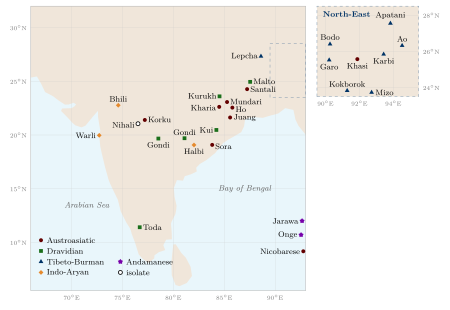
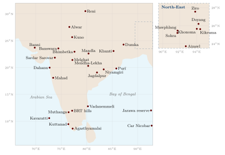

Chapter 1: Introduction: Peoples, Categories and Knowledge¶
1.1 Knowledge That Lives Outside Texts¶
Most histories of Indian knowledge follow the paths lit by manuscript and inscription: the Vedic corpus, the śāstras, the commentaries and the courtly treatises. Much of what people in the subcontinent have known, however, was never written down by those who knew it. It was held in practice, in song and story, in ritual, and in the seasonal routines of farming, herding, fishing and gathering. This volume is about that knowledge as it is held by Adivasi (tribal) communities and by the wider world of rural and folk practice.
The subject covers a great deal: the ecological knowledge of forest communities; healing practices; the oral literatures of Gond, Santal, Bhil and many other peoples; the painted and woven traditions of Warli, Pardhan Gond, Saura, Bhil and Mithila artists; village councils and customary law; sacred groves; water-harvesting systems; food and fermentation; and the folk astronomy and weather lore that guide agricultural calendars. The aim is to describe these traditions accurately and to treat their holders as knowledgeable people with their own histories, not as survivals from a timeless past.
Two temptations run through much writing on this subject, and this volume tries to avoid both. The first is to romanticise: to present Adivasi communities as “noble savages” living in pristine harmony with nature, untouched by history, conflict or change. The second is to absorb: to treat tribal religions and knowledge as rustic or “lost” forms of Hinduism, or as raw material that only becomes knowledge when a Sanskrit text or a laboratory has certified it. Both framings erase what the communities themselves say about who they are (Xaxa 1999; Shah 2010).
The Scope of This Volume
Adivasi and Scheduled Tribe communities. The 2011 Census counted about 10.4 crore (104 million) members of Scheduled Tribes, 8.6 per cent of India’s population, belonging to more than 700 notified ethnic groups (Office of the Registrar General and Census Commissioner, India 2013). Their languages belong to at least five language families (Section 1.4.1).
Folk knowledge. The oral and practice-based knowledge of rural communities generally: pastoralists, fishing communities, cultivators, artisans and ritual specialists, most of whom are not Scheduled Tribes (Chapter 10).
Specialists. Healers, midwives, bards and genealogists, painters, bone-setters, water-diviners, seed-keepers and priests within these communities.
The distinction between tribal and folk knowledge matters. The two overlap, but they differ in legal status, in history and in their relation to caste society. Where this volume speaks of “indigenous knowledge” it means knowledge held by a particular community in a particular place; it does not mean that every such tradition is ancient, unchanging or equally reliable.
1.2 The Title and the Frame of This Volume¶
The title Jana–Jāti needs explaining, since both of its halves carry long histories. In modern Hindi and in the language of the Indian state, janajāti is the word for “tribe”: a Scheduled Tribe is an anusūcit janajāti, and the day on which the central government now honours Adivasi leaders is Janjātīya Gaurav Divas (Chapter 8). The title divides the compound into its parts. Jana means “people” in a broad sense, the folk as distinct from the court or the schools. Jāti means “birth”, and so a group into which one is born; in everyday speech it is the word for caste.
The two halves point to the two kinds of community this volume is about. Most of the book concerns Adivasi communities, the janajāti of official usage, whose histories, languages and religions it treats on their own terms. A smaller part concerns folk knowledge in a wider sense: the knowledge of the cultivators, herders, fishers, artisans, bards and healers of village India. Most of them live within the caste order, and their knowledge has been shaped by it, often to the cost of those at its bottom. Chapter 10 is given to them, and the chapters on water, healing, oral literature and art draw on both worlds. The hyphen in the title keeps the two apart as well as together. Adivasi communities are not castes, and many have resisted being made into castes. But the line between “tribe” and “caste” has always been porous (Section 1.5), and much of what villagers know about seasons, plants and healing is shared across it.
“Folk” here means knowledge held and passed on mainly in speech and practice rather than in texts, by communities rather than by schools. It is not a residue of classical learning, nor a stage before it. Folklorists of India such as A. K. Ramanujan, Stuart Blackburn, Peter Claus and Velcheru Narayana Rao have shown that oral and written traditions have coexisted and answered each other for centuries. Folk traditions, in their account, have their own aesthetics and their own versions of the classical stories (Blackburn and Ramanujan 1986; Mills et al. 2003).
The series to which this volume belongs bears a Sanskrit name, and each volume opens with a Sanskrit dedication. That frame suits volumes on the Veda or on grammar; applied to Adivasi knowledge it can mislead. Adivasi words for knowing, teaching and the sacred come from Santali, Gondi, Kurukh, Mundari, Khasi and many other languages, not from Sanskrit. Adivasi movements have repeatedly rejected the view that their religions are forms of Hinduism or their knowledge a rustic copy of śāstra (Section 1.10; Chapter 12). This volume therefore uses Sanskrit terms only where a Sanskrit text or a shared calendar is actually involved. It does not use classical categories such as pramāṇa as the measure of community knowledge (Section 1.13). The idea of “Indian Knowledge Systems” is useful for this subject only if it is understood as plural (Section 14.2).
1.3 Names and Categories: Adivasi, Scheduled Tribe and Self-Designation¶
Every word used for these communities carries a history. The administrative category is Scheduled Tribe: under Article 342 of the Constitution the President notifies, state by state, the communities to be treated as Scheduled Tribes, and Parliament may amend the list. The Constitution does not define what a “tribe” is. Official practice since the Lokur Committee (1965) has relied on criteria such as “primitive traits”, distinctive culture, geographical isolation, “shyness of contact” and backwardness. These criteria have been criticised by Adivasi scholars, notably Virginius Xaxa, as colonial in origin and as describing communities by what they are supposed to lack rather than by what they are (Xaxa 1999, 2008).
Adivasi (ādivāsī, “original inhabitant”) is a modern political self-designation. It came into wide use in the Chotanagpur plateau in the 1930s, when the Adivasi Mahasabha (founded 1938, and later led by Jaipal Singh Munda) campaigned for a separate Jharkhand. Many communities in central and eastern India use it with pride. It is less used in the North-East, where communities usually describe themselves by their own names (Naga, Mizo, Khasi, Garo, Bodo and so on) or as “indigenous peoples”. The Government of India has generally avoided the term “indigenous peoples” in international forums, arguing that all Indians are indigenous; many Adivasi organisations reject this position (Chapter 12).
Other terms are more problematic. Vanvāsī (“forest dweller”), promoted by some Hindu nationalist organisations, implies that the communities are Hindus who happen to live in forests and denies their claim to prior habitation. Girijan (“hill people”) was popularised in the mid-twentieth century. Colonial writing used “aboriginal”, “animist”, “primitive” and, for some nomadic and pastoral communities, “criminal tribes”; the last is discussed critically in Section 1.8.
Above all, communities have their own names for themselves. Santals call themselves Hoṛ (people); many Gonds call themselves Koitur; Oraons call themselves and their language Kuṛukh; the Sora (Saora) of Odisha, the Toda of the Nilgiris and the Jarawa of the Andaman Islands each have their own ethnonyms. This volume uses “Adivasi” for the communities of central, eastern, western and southern India, community names wherever possible, and “Scheduled Tribe” when the legal category is meant. Table 1.1 lists some of the communities discussed in this volume.
| Community | Self-name / note | Language (family) | Main states |
|---|---|---|---|
| Santal | Hoṛ | Santali (Austroasiatic) | Jharkhand, W. Bengal, Odisha, Bihar, Assam |
| Munda | Hoṛo | Mundari (Austroasiatic) | Jharkhand, Odisha |
| Ho | Ho | Ho (Austroasiatic) | Jharkhand, Odisha |
| Sora (Saora) | Sora (Austroasiatic) | Odisha, Andhra Pradesh | |
| Oraon | Kuṛukh | Kurukh (Dravidian) | Jharkhand, Chhattisgarh, Odisha |
| Gond | Koitur | Gondi (Dravidian); many Gonds speak Hindi, Marathi or Telugu | Madhya Pradesh, Chhattisgarh, Maharashtra, Telangana, Odisha |
| Kondh | Kuī | Kui, Kuvi (Dravidian) | Odisha |
| Toda | Toda (Dravidian) | Tamil Nadu (Nilgiris) | |
| Bhil | Bhili and related (Indo-Aryan) | Rajasthan, Gujarat, Madhya Pradesh, Maharashtra | |
| Warli | Warli (Indo-Aryan) | Maharashtra, Gujarat | |
| Baiga | Mostly Hindi dialects | Madhya Pradesh, Chhattisgarh | |
| Khasi | Khasi (Austroasiatic) | Meghalaya | |
| Garo | A-.15em chik | Garo (Tibeto-Burman) | Meghalaya |
| Bodo | Bodo (Tibeto-Burman) | Assam | |
| Mizo | Mizo (Tibeto-Burman) | Mizoram | |
| Ao, Angami and other Naga | Naga languages (Tibeto-Burman) | Nagaland, Manipur | |
| Onge, Jarawa | Ongan (Andamanese) | Andaman Islands |
Indigenous Voice: Jaipal Singh in the Constituent Assembly, 1946
Jaipal Singh Munda (1903–1970), Oxford-educated captain of India’s Olympic hockey team in 1928 and leader of the Adivasi Mahasabha, spoke on the Objectives Resolution on 19 December 1946. He declared that he was “proud to be a Jungli”, the name by which his people were known, and told the Assembly that it could not teach democracy to the tribal people: “you have to learn democratic ways from them. They are the most democratic people on earth” (Constituent Assembly of India 1946).
1.4 Deep History: Peoples, Languages and Evidence¶
The word ādivāsī makes a claim about priority, and popular writing often turns this into claims of extreme antiquity for particular communities. The evidence needs to be handled carefully. All modern South Asian populations, tribal and non-tribal, descend from mixtures of several ancestral populations; genetics does not support a simple picture of “original” peoples displaced by later arrivals (Narasimhan et al. 2019).
1.4.1 Languages¶
Language history is clearer than genetic history, but it too is a history of movement and contact. Austroasiatic languages, including the Munda languages (Santali, Mundari, Ho, Kharia, Sora, Juang and others) and Khasi in Meghalaya, are related to languages of mainland Southeast Asia such as Khmer and Mon. Where the family began, and when its Indian branches arrived, is still debated. The view held by many linguists and geneticists is that Austroasiatic speech reached eastern India from the east within the last few thousand years, perhaps with the spread of rice agriculture, and was adopted by populations whose ancestry was largely South Asian. Genetic studies of Indian Austroasiatic speakers support a version of this view: their paternal lineages link them with East and Southeast Asia, while their maternal lineages are mostly South Asian (Chaubey et al. 2011; Narasimhan et al. 2019). A minority of scholars has argued instead that the family arose in eastern India and spread eastwards, and the linguistic evidence for the history of the Munda branch is surveyed in Anderson (2008). Either way, claims that Munda-speaking peoples “migrated from Southeast Asia over fifty thousand years ago” confuse the first modern human settlement of South Asia with the much later history of a language family. The families are listed in Table 1.2, and Figure 1.1 shows where some of their languages are spoken.
| Family | Examples of languages spoken by Scheduled Tribes | Main regions |
|---|---|---|
| Austroasiatic | Munda branch: Santali, Mundari, Ho, Kharia, Sora, Juang, Korku; Khasian branch: Khasi; Nicobarese; Shompen | Jharkhand, Odisha, W. Bengal, Meghalaya, Nicobar Islands |
| Dravidian | Gondi, Kurukh (Oraon), Kui and Kuvi (Kondh), Malto, Koya, Toda, Kota, Irula | Central India, Odisha, Nilgiris |
| Tibeto-Burman (Sino-Tibetan) | Bodo, Garo, Mizo, Karbi, the Naga languages, Apatani, Lepcha, Kokborok | North-East, Sikkim, Himalaya |
| Indo-Aryan | Bhili, Halbi, Sadri (Nagpuri), the speech of many Bhil and Mina communities | Western and central India |
| Andamanese (two unrelated families) | Great Andamanese (now moribund); Ongan: Onge and Jarawa; Sentinelese (unrecorded) | Andaman Islands |
| Isolate | Nihali | Maharashtra–Madhya Pradesh border |
Dravidian-speaking Adivasi communities such as the Gond, Oraon and Kondh are linked by language to the major literary languages of the south, and Indo-Aryan-speaking communities such as many Bhils show how complex the history is: language shift has happened many times in both directions. The Andamanese languages are the most distinct of all; Great Andamanese is now remembered by only a handful of people. Each of these languages carries vocabularies for plants, animals, soils, kinship and ritual that do not translate neatly into any other (Chapter 13).

1.4.2 Rock Art and the Problem of Continuity¶
The rock shelters of Bhimbetka in Madhya Pradesh, discovered for archaeology by V. S. Wakankar in 1957 and inscribed as a UNESCO World Heritage Site in 2003, contain paintings from the Mesolithic to the historical period, showing hunting, dancing, animals and, in later layers, riders and warriors. It is tempting to read these paintings as the direct ancestors of the wall paintings made by Gond, Baiga or Saura artists today. There are suggestive resemblances of subject and style, but there is no demonstrated continuity across many thousands of years, and the communities living near the shelters today are not necessarily descended from the painters. Such resemblances are best treated as questions, not as proof of an unbroken tradition.
1.4.3 Texts and Forests¶
The relation between Adivasi and folk knowledge and the Sanskrit textual tradition has never been simple opposition. The Carakasaṃhitā, the classical Āyurvedic compendium, acknowledges that goatherds, shepherds, cowherds and other forest dwellers know medicinal plants by name and appearance, while insisting that the physician must also know their proper use (Sūtrasthāna 1.120–121; verse numbers vary between editions) (Wujastyk 2003). Many plants of the classical pharmacopoeia must have been learned from such people.
The flow ran in several directions. Brahmanical religion absorbed local goddesses, sacred places and myths, a process that D. D. Kosambi analysed in Myth and Reality (Kosambi 1962), and M. N. Srinivas called the adoption of upper-caste practices by lower-ranked groups “Sanskritisation” (Srinivas 1952). These processes are real, but they do not show that Adivasi religions are “really” Hindu. Many communities maintain distinct religious traditions centred on their own deities and sacred groves; others have become Christian, Hindu or Muslim, or combine several allegiances; and many have organised to have their own religions recognised (Chapter 12).
1.5 Forest Peoples in Early Texts and States¶
Forest and hill peoples appear in early Indian texts mostly as outsiders seen from the village and the court. Sanskrit literature names the Niṣāda, Śabara, Pulinda, Kirāta and others, sometimes as hunters and fowlers, sometimes as kings in their own domains. The portrayals are mixed. In the Rāmāyaṇa, Guha, king of the Niṣādas, welcomes Rāma and ferries him across the Gaṅgā, and the Śabara woman Śabarī receives him in her hermitage. In the Mahābhārata, the Niṣāda prince Ekalavya, refused instruction by the teacher Droṇa, teaches himself archery before an image of Droṇa and becomes so skilled that Droṇa demands his right thumb as a teacher’s fee, so that he cannot rival the Kṣatriya prince Arjuna. Modern Adivasi and Dalit writers have often retold the Ekalavya story as an emblem of exclusion from learning. Bhāravi’s Kirātārjunīya (c. 6th century CE) takes as its subject Śiva’s appearance to Arjuna in the guise of a Kirāta hunter.
The early state regarded forest peoples with a mixture of conciliation and threat. In his Thirteenth Rock Edict (mid-third century BCE), the emperor Aśoka, after describing his remorse over the conquest of Kaliṅga, addresses the forest peoples (aṭavi) within his dominions: he seeks to win them over, but reminds them that he has the power to punish. The Arthaśāstra (a composite text of c. 50 BCE–300 CE) treats forest chiefs (āṭavika) both as a source of troops and as a danger to be watched.
Over the following two millennia many forest communities formed states of their own or became part of regional kingdoms. In central India, Gond dynasties ruled from Garha-Mandla, Deogarh and Chanda; Rani Durgavati of Garha-Mandla died fighting a Mughal army in 1564. The Chero ruled Palamau, and the Nagvanshi rajas of Chotanagpur ruled over Munda and Oraon villages. In Assam, the Tai-speaking Ahom kings (1228–1826) maintained complex relations of tribute, trade and war with the hill peoples around the Brahmaputra valley. The boundary between “tribe” and “caste”, between forest chiefdom and Hindu kingdom, was porous: ruling lineages of Adivasi origin often adopted Rajput genealogies and Brahmin priests, a process the anthropologist N. K. Bose called the “Hindu method of tribal absorption” and Kosambi analysed as the fusion of tribal and Brahmanical cults (Bose 1941; Kosambi 1962).
1.5.1 Tribe, Kingdom and Cult¶
Historians have since shown how this absorption worked. Hermann Kulke and his colleagues studied the cult of Jagannātha at Purī and the early medieval kingdoms of Odisha. They described a process in which kings of the hinterland took up the deities of forest peoples, often goddesses worshipped as a wooden post or a stone. The kings gave these deities temples and Brahmin priests and made them protectors of the dynasty. A cult that began with one local community could thus become the cult of a kingdom, and in the case of Jagannātha of a whole region (Eschmann et al. 1978; Kulke 1993). The Purī cult keeps traces of this history. Its temple legend tells of a Śabara chief who worshipped the god in the forest before a king brought him to Purī, and the Daitā servitors of the temple, who trace their descent to that chief, still attend the deity in the rites of renewal. Surajit Sinha described the related “Rajput myth” by which the ruling lineages of tribal chiefdoms in central India, among them those of the Bhumij, claimed Rajput descent and Kshatriya rank (Sinha 1962).
The Gond kingdoms show the same process from the inside. The rulers of Garha-Mandla, Deogarh and Chanda were Gonds. They built forts and tanks, endowed temples, employed Brahmin and Kayastha officials and in time adopted genealogies of the Rajput kind, while the villages beneath them remained Gond in speech and worship. In the hills of western India, Bhil chiefs were allies, rivals and tributaries of the Rajput states. Several Rajput houses of the region kept a tradition in which a Bhil marked the forehead of a new ruler at his installation, a ceremonial memory of the Bhils’ earlier lordship of the land.
Sumit Guha’s long history of western and central India from 1200 to 1991 argues that “tribal” identity was not a survival from before the state but was formed in relation to states. Forest and hill peoples supplied kingdoms with soldiers, hunters, carriers and forest produce. They moved in and out of peasant life, and they were classed as wild or civilised according to their relation to power (S. Guha 1999). The colonial category of the “tribe” (Section 1.8) hardened what had been a shifting set of relationships. The forest was never a world apart; but its peoples lived on terms very different from those of the plains.
1.6 The Landscape of Tribal India¶
Scheduled Tribes are not a homogeneous group. They differ in language, livelihood, ecology, religion, social organisation and their history of contact with states and markets. Some are numerous peasant societies with long histories of kingdoms of their own (the Gond rulers of Garha-Mandla, Deogarh and Chanda in central India are an example); others are small foraging groups. Table 1.3 gives a regional overview, and Figure 1.2 shows many of the places discussed in this volume.
| Region | Some communities | Ecology and economy |
|---|---|---|
| Central India | Gond, Baiga, Korku, Bhil, Bharia | Deciduous (teak and sal) forest; cultivation, forest produce, wage labour |
| Eastern India | Santal, Munda, Ho, Oraon, Kharia, Kondh, Sora, Juang | Sal forest and plateau; rice and millet cultivation; mining regions |
| Western India | Bhil, Bhilala, Rathwa, Warli, Kokna, Mina | Dry forest and hills; cultivation, pastoralism |
| North-East | Naga peoples, Mizo, Khasi, Garo, Bodo, Apatani, Mising | Montane and riverine; shifting and terrace cultivation |
| South India | Toda, Kota, Irula, Kurumba, Soliga, Kani, Chenchu, Koya | Western and Eastern Ghats; forest produce, cultivation, pastoralism |
| Islands | Great Andamanese, Onge, Jarawa, Sentinelese, Shompen, Nicobarese | Tropical island forest and coast; foraging, fishing, horticulture |
1.6.1 Across Borders¶
Many Adivasi communities do not stop at India’s borders. Santal, Oraon and Munda communities live in Bangladesh and Nepal; the Garo, Khasi and Chakma on both sides of the Bangladesh border; the Naga, Kuki, Chin and Mizo peoples on both sides of the border with Myanmar; and Monpa and other communities of Arunachal Pradesh have kin in Tibet and Bhutan. These cross-border ties matter for language, religion, trade and politics, and they are one reason why the history of the North-East cannot be understood within Indian boundaries alone.
1.6.2 Population¶
According to the 2011 Census, the three largest Scheduled Tribes were the Bhil (about 1.7 crore), the Gond (about 1.3 crore) and the Santal (about 65 lakh) (Office of the Registrar General and Census Commissioner, India 2013). At the other end of the scale are communities numbering a few hundred or a few thousand, such as the Toda, the Onge and the Jarawa. Figures for individual groups vary between censuses because of changes in the lists and in how people report themselves, and they should always be checked against the current census tables.

1.6.3 Particularly Vulnerable Tribal Groups¶
The Government of India recognises 75 communities as Particularly Vulnerable Tribal Groups (PVTGs; called “Primitive Tribal Groups” until 2006), using criteria of pre-agricultural technology, stagnant or declining population, low literacy and a subsistence economy. They include the Baiga, Birhor, Chenchu, Toda, Kurumba, Dongria Kondh, Juang, and the Jarawa, Onge, Sentinelese and Great Andamanese. The category directs welfare spending, but it also freezes communities into an image of “primitiveness”. The Baiga, for example, were long described as backward for refusing the plough; Verrier Elwin recorded their own explanation that ploughing would tear the breast of Mother Earth, and their preference for shifting cultivation (bewar) was suppressed by colonial forest policy (Elwin 1939).
1.6.4 Regions Often Left Out¶
General accounts of Adivasi India, this volume included, draw mostly on central and eastern India and on the hills of the North-East. Several regions deserve more attention than they usually receive.
In Lakshadweep, the coral islands off the Kerala coast, almost the whole population is listed as Scheduled Tribe: about 95 per cent in 2011 (Office of the Registrar General and Census Commissioner, India 2013). The islanders are Muslims and speak a form of Malayalam, except on Minicoy, where the language is Mahl, a form of Maldivian; many families follow matrilineal inheritance. Their knowledge is of the lagoon and the open sea, of coconut cultivation and of pole-and-line fishing for tuna. In the Nicobar Islands, the Nicobarese, who speak Austroasiatic languages, live by horticulture (coconut, pandanus and areca), pig-keeping and fishing, with land and groves held by extended households; the Shompen of Great Nicobar are a small forest people. The Nicobarese suffered heavily in the tsunami of 2004 (Section 6.6).
The Himalaya has its own Scheduled Tribes. The Bhotia of Uttarakhand carried on the trade across the passes with Tibet until it was closed after 1962. The Kinnaura and Lahauli of Himachal Pradesh are in large part Buddhist, and the Jaunsari of Jaunsar-Bawar in Uttarakhand long practised polyandrous marriage under their customary law. The Gujjar and Bakarwal herders of Jammu and Kashmir, listed as Scheduled Tribes in 1991, move with their flocks between the plains and the high pastures (Section 2.15). The Lepcha and Bhutia of Sikkim and the Monpa of western Arunachal Pradesh belong to the same Himalayan world.
In Tripura, Scheduled Tribes make up about a third of the population (Office of the Registrar General and Census Commissioner, India 2013). The Tripuri, whose language Kokborok is an official language of the state, the Reang (Bru), the Jamatia and others were once the majority. The settlement of refugees from East Bengal after 1947 and again around 1971 made them a minority, a change that underlies the state’s tribal politics and its Sixth Schedule council (Section 11.4). In Kerala, besides the Kani of the southern hills (Section 7.5) and the land struggle at Muthanga (Section 12.5), the largest Adivasi communities are the Paniya and Adiya of Wayanad. Until the mid-twentieth century many of them worked as bonded labourers for landlords, and they remain among the poorest and most landless Adivasis of the state.
1.7 Five Communities in Brief¶
Brief sketches of four large communities and of the small and vulnerable peoples of the Andaman Islands illustrate the variety that general statements conceal.
1.7.1 Santal¶
The Santal are the largest Austroasiatic-speaking people of India, living mainly in Jharkhand, West Bengal, Odisha and Bihar, with large communities in Assam (descendants of tea-garden workers), Bangladesh and Nepal. Their society is divided into twelve clans and organised under village headmen (mãjhi) and regional heads (parganā) (Chapter 11). After the hul of 1855–56 the British created the district of the Santal Parganas, with a special administration and, later, laws protecting Santal land. Santal religion, sometimes called Sāri Dharam (“true religion”), centres on the sacred grove and the deities Maraṅ Buru and Jāher Erā. Santali has its own script, Ol Chiki, and has been a scheduled language since 2003. In 2022 Droupadi Murmu, a Santal woman from Odisha, became the first Adivasi President of India.
1.7.2 Gond¶
The Gond, who speak Dravidian Gondi languages (though many now speak Hindi, Marathi or Telugu), are spread across central India, from which the region takes the name Gondwana. Gond dynasties ruled kingdoms in central India from the fourteenth to the eighteenth centuries. Gond society is organised into clans grouped by the number of gods they worship, a system explained in the Lingo narrative (Chapter 8). The Gond are internally very diverse: the Muria, Maria and other groups of Bastar, the Raj Gond of the Deccan studied by Fürer-Haimendorf, and the Gond of the Narmada valley differ in language, custom and history. In recent decades Gond movements have promoted a distinct Gond religion (Koyā Punem) and the Gondi language, and the Gondwana Gantantra Party has sought political representation.
1.7.3 Bhil¶
The Bhil, the largest Scheduled Tribe in the 2011 Census, live in the hills of Rajasthan, Gujarat, Madhya Pradesh and Maharashtra, and speak Bhili and related Indo-Aryan languages. Bhil chiefs held power in the hills of western India for centuries, often in uneasy alliance with Rajput rulers; the British raised Bhil military corps in Khandesh (1825) and Mewar (1841) to bring them under control (Skaria 1999). In 1913 a gathering of Bhil followers of the reformer Govind Guru on Mangarh hill near Banswara was fired on by colonial and princely troops, killing many; the event is remembered among the Bhils as a massacre. Bhil religious life combines the worship of local deities with devotional movements, and Bhil painting (Chapter 9) and oral epics (Chapter 8) have gained wide recognition.
1.7.4 Khasi¶
The Khasi of Meghalaya speak an Austroasiatic language and are matrilineal: descent is traced through women, and the youngest daughter inherits the ancestral house. Khasi chiefdoms (hima) under a syiem governed the hills before British rule; U Tirot Sing, a Khasi chief, led resistance to the British between 1829 and 1833. Most Khasi became Christian under the influence of the Welsh Presbyterian mission, which also gave Khasi its Roman script; the indigenous religion is maintained by the Seng Khasi movement. Khasi villages are known for their sacred forests (Chapter 3) and for the living root bridges of the southern slopes, made by guiding the aerial roots of rubber fig trees across streams over many years (Chapter 2).
1.7.5 Andaman Islanders¶
The indigenous peoples of the Andaman Islands are among the smallest and most vulnerable communities in India. In the mid-nineteenth century, when the British established a penal settlement at Port Blair (1858), the Great Andamanese numbered several thousand, divided into many groups with distinct languages. Epidemics of measles, influenza and syphilis, violence and the disruption of their way of life reduced them catastrophically; by the late twentieth century only a few dozen survived, resettled on Strait Island. The Onge of Little Andaman, also greatly reduced, live in a settlement at Dugong Creek. The Jarawa of the western forests of South and Middle Andaman avoided contact until the 1990s, and the Sentinelese of North Sentinel Island still reject it (Chapter 13). Their histories are a stark reminder of what contact without protection can mean.
1.8 Colonial Rule: Forests, Land and the “Criminal Tribes”¶
British rule transformed the relation between Adivasi communities and the land. Three changes were decisive.
Forest law. The Indian Forest Acts of 1865 and 1878, and the consolidated Indian Forest Act of 1927 (still in force), asserted state control over vast forest areas. Reserved forests were closed to cultivation, grazing and collection except by permission. Shifting cultivation was restricted or banned; customary use became “encroachment” or “theft”. The forest service, shaped by the German-trained Dietrich Brandis and his successors, managed forests above all for timber, especially teak and sal for railway sleepers and shipbuilding. Ramachandra Guha and Madhav Gadgil have described this as a fundamental break in the ecological history of India (Guha 1989; Gadgil and Guha 1993). Ajay Skaria’s history of the Dangs in western India shows how colonial ideas of “wildness” shaped the treatment of Bhil chiefs and forest peoples, and how those peoples used and contested the same ideas (Skaria 1999).
Land and debt. Revenue settlements recorded individual title in ways that ignored collective and customary tenure. Moneylenders, traders and landlords from the plains acquired Adivasi land through debt. Protective laws such as the Chotanagpur Tenancy Act (1908), which recognised the Munda khuṇṭkaṭṭi tenure of the lineages that first cleared the land, were passed only after major uprisings (Roy 1912; Singh 1966).
The “criminal tribes”. The Criminal Tribes Act of 1871, extended in 1911 and 1924, allowed the government to declare whole communities “criminal by birth”. Members had to register, report to the police and could be confined to settlements. Most of the communities affected were nomadic pastoralists, traders, performers and forest peoples whose mobility the colonial state distrusted. The Act was repealed in 1952 by the Criminal Tribes Laws (Repeal) Act, and the communities were “denotified”; but many states then passed Habitual Offenders Acts, and stigma and police harassment continue. The death in police custody in 1998 of Budhan Sabar, a Kheria Sabar man from Purulia, led the writer Mahasweta Devi and the scholar G. N. Devy to found a campaign for the rights of Denotified Tribes (Radhakrishna 2001; Devy 2006). The language of “criminal tribes” appears in this volume only to describe that history.
1.8.1 The Census and the Making of Categories¶
The colonial census, conducted every ten years from 1871–72, did much to create the categories through which Adivasi communities are still seen. Census officials had to decide who was a “tribe” and who a “caste”, and what religion people followed. Many Adivasis were recorded as “animists” or followers of “tribal religion”; others were classed as Hindu. H. H. Risley, Census Commissioner for 1901, used anthropometry to rank castes and tribes on a racial scale (Risley 1891); J. H. Hutton, Census Commissioner for 1931 and himself an ethnographer of the Naga, compiled lists of “primitive tribes” that later informed the lists of Scheduled Tribes. These classifications had real consequences: they decided who would receive protection, who would be subject to special laws, and how communities came to understand themselves. After independence the religion question was simplified, and the separate “tribal religion” category disappeared from the census forms, a change that underlies the present demand for a Sarna code (Chapter 12).
1.8.2 Resistance¶
Adivasi communities did not accept these changes passively. Among many uprisings were the Santal hul of 1855–56, led by the brothers Sidhu and Kanhu Murmu against moneylenders, landlords and the East India Company; the ulgulān of 1899–1900 led by Birsa Munda in Chotanagpur (Singh 1966); the Bhumkal rebellion of 1910 in Bastar (Sundar 1997); the Rampa rebellion of 1922–24 led by Alluri Sitarama Raju in the Eastern Ghats; and the struggle of the Gond leader Komaram Bheem against the Nizam’s officials in the late 1930s, with which the slogan jal, jangal, zamīn (“water, forest, land”) is associated. Movements of religious reform, such as the Tana Bhagat movement among the Oraon (from 1914) and the Devi movement among the Bhils of south Gujarat in 1922–23 (Hardiman 1987), were also forms of assertion. The oral literature of these struggles is discussed in Chapter 8.
1.8.3 Adivasis and the National Movement¶
Adivasi communities took part in the national movement in their own ways. The Tana Bhagats of Chotanagpur joined Congress campaigns in the 1920s and remained devoted Gandhians. In Gujarat, the social worker A. V. Thakkar (“Thakkar Bapa”) founded the Bhil Seva Mandal in 1922 to work among the Bhils, and Gandhian ashrams and schools were set up in several tribal regions. In the Naga hills, the young Zeliangrong leader Gaidinliu, who led a religious and political movement against British rule, was arrested in 1932 and imprisoned until 1947; Nehru, who met her in prison, called her “Rani”. At the same time, many Adivasi leaders distrusted the Congress, which they saw as dominated by the caste Hindus of the plains, and pursued their own organisations, such as the Adivasi Mahasabha. The relation between Adivasi movements and Indian nationalism was therefore one of both alliance and tension.
1.8.4 The North-East: Frontier, Inner Line and Autonomy¶
The hill peoples of the North-East had a different colonial history. Many were never brought under regular administration. The Bengal Eastern Frontier Regulation of 1873 created an “Inner Line” beyond which outsiders could not go without a permit, to protect British interests in tea and to avoid conflict with the hill peoples; the system still survives in modified form in several states. Under the Government of India Act of 1935, large hill areas were classed as “Excluded” or “Partially Excluded” and administered directly by the Governor. American Baptist, Welsh Presbyterian and other missions, working in these areas from the nineteenth century, introduced writing in Roman script, schools and Christianity, which became central to Naga, Mizo and Khasi identity (Chapter 12).
At independence, a sub-committee of the Constituent Assembly chaired by Gopinath Bordoloi recommended autonomous councils for the hill districts, which became the basis of the Sixth Schedule. Some Naga leaders, organised in the Naga National Council under A. Z. Phizo, rejected inclusion in India altogether, beginning a long armed conflict; Nagaland became a state in 1963, and negotiations with Naga groups have continued since a ceasefire in 1997. In the Mizo hills, a famine following the flowering of bamboo in 1959 led to the formation of the Mizo National Front and an uprising in 1966; the Mizo Accord of 1986 ended the insurgency, and Mizoram became a state in 1987. Meghalaya was created in 1972. The Armed Forces (Special Powers) Act, 1958, first applied in the Naga hills, has been the subject of long protest. This history explains why the language of “indigenous peoples”, self-government and customary law is particularly strong in the North-East.
1.8.5 The Ethnographic Record¶
The colonial period also produced the first large ethnographies. Their value is real, but so are their limits: they were written within a framework that ranked peoples on a scale from “primitive” to “civilised” and that served administration. Some of the main figures are listed in Table 1.4.
| Scholar | Active | Main work |
|---|---|---|
| Stephen Hislop | 1840s–1863 | Recorded the Gond Lingo narrative; published 1866 (Hislop 1866) |
| W. H. R. Rivers | 1901–1906 | The Todas (1906); the genealogical method |
| Edgar Thurston | 1900s | Castes and Tribes of Southern India (1909, seven volumes) (Thurston and Rangachari 1909) |
| Sarat Chandra Roy | 1910s–1940s | The Mundas and Their Country (1912); studies of Oraon, Birhor, Kharia (Roy 1912) |
| W. V. Grigson | 1930s–1940s | The Maria Gonds of Bastar (1938) (Grigson 1938) |
| Verrier Elwin | 1930s–1964 | Baiga, Muria, Saora and many others (Elwin 1939, 1947) |
| C. von Fürer-Haimendorf | 1930s–1980s | Naga, Chenchu, Reddi, Raj Gond, Apatani (Fürer-Haimendorf 1982) |
1.9 Anthropology and Policy: Elwin, Ghurye and the Tribal Panchsheel¶
Independent India inherited a sharp debate about what policy towards Adivasi communities should be. Its two poles are usually identified with Verrier Elwin and G. S. Ghurye.
Verrier Elwin (1902–1964) came to India as a missionary, left the church, lived for decades among the Gond and Baiga of central India, married into a Gond family, and became an Indian citizen. His ethnographies, collections of myths and songs, and studies of art were written with deep sympathy (Elwin 1939, 1947, 1949). In the 1930s and 1940s he argued that Adivasi communities were being destroyed by contact with moneylenders, officials, missionaries and Hindu reformers, and that they needed protection. Critics caricatured this as a proposal to keep tribes in a “national park”; Elwin later moved towards a policy of integration on the communities’ own terms. His biographer Ramachandra Guha has documented both his achievement and the paternalism of his views (R. Guha 1999).
The sociologist G. S. Ghurye took the opposite view. In The Aborigines—“So-called”—and Their Future (1943) he argued that the tribes of central India were “backward Hindus”, distinguished from their neighbours only by degree, and that their future lay in assimilation into Hindu society (Ghurye 1943). Ghurye was right that the boundaries between “tribe” and “caste” in central India had always been porous. But his framing denied the distinct religious and social identity that many communities asserted, and it has been taken up since by those who regard Adivasis as Hindus who need to be “brought back”. Adivasi scholars have rejected both the museum and the melting pot (Xaxa 2008).
Jawaharlal Nehru sought a middle course. In his foreword to the second edition of Elwin’s A Philosophy for NEFA (1959) he set out five principles, later called the Tribal Panchsheel (Elwin 1959):
-
People should develop along the lines of their own genius; nothing should be imposed on them.
-
Tribal rights in land and forests should be respected.
-
Their own people should be trained to do the work of administration and development, with outsiders introduced sparingly.
-
Tribal areas should not be over-administered or overwhelmed with schemes; development should work through their own social and cultural institutions.
-
Results should be judged by the quality of human character that is evolved, not by statistics or money spent.
The Panchsheel was honoured mainly in the breach. Mining, dams and industry expanded into Adivasi regions; forest departments continued to treat forest dwellers as encroachers; and the protections of the Fifth Schedule were rarely used. The High Level Committee chaired by Virginius Xaxa (2014) documented persistent gaps between Scheduled Tribes and the rest of the population in land, health, education and livelihoods, and the scale of displacement by development projects (Government of India 2014).
1.10 Romanticism and Its Critics¶
Much writing about Adivasis, from Elwin onwards, has been shaped by romanticism: the image of tribal people as children of nature, spontaneous, free and at one with the forest, set against a corrupt modern civilisation. The historian Archana Prasad has argued that Elwin’s portrait of the Baiga as “primitive” forest people bound to shifting cultivation helped to fix an anti-modern identity on them, and that this image, taken up by later environmentalists, obscured the long history of Baiga engagement with markets, states and neighbouring communities (Prasad 2003). Amita Baviskar and Alpa Shah have shown how activists and environmental movements have sometimes projected the ideal of the “ecological Adivasi” onto communities whose own priorities included roads, schools, jobs and a better price for their produce (Baviskar 1995; Shah 2010).
The critics do not deny that Adivasi communities have distinctive knowledge and values, or that their land and forests must be protected. Their point is that romanticism, however sympathetic, can be another way of not listening: it decides in advance what Adivasis are and should want. This volume tries to report knowledge and practices as they are, with their strengths and limitations, and to recognise that Adivasi communities, like all others, change, argue among themselves, and choose their own futures.
1.11 Adivasi Voices and Scholarship¶
For most of the twentieth century, Adivasi communities were written about by others. That has changed. Adivasi politicians, scholars, writers, artists and activists now speak for their communities in many forums, and they have challenged many of the assumptions on which earlier writing, including well-meaning writing, was based.
Jaipal Singh Munda’s speeches in the Constituent Assembly, quoted above, were an early and eloquent example. The anthropologist and musician Ram Dayal Munda (1939–2011), vice-chancellor of Ranchi University and a leader of the Jharkhand movement, argued for the recognition of Adivasi religion, languages and music as living traditions, and made widely known the Munda saying that “to walk is to dance, to speak is to sing”, as an expression of the place of music in everyday life. The sociologist Virginius Xaxa, an Oraon, criticised the categories through which anthropology and the state had defined “tribes”, and chaired the High Level Committee whose report of 2014 is one of the most important official documents on Adivasi conditions (Xaxa 1999, 2008; Government of India 2014). Activists such as the Munda journalist Dayamani Barla, who led opposition to a steel plant in Jharkhand, and C. K. Janu in Kerala have become national figures. Writers and artists, discussed in Chapters 8 and 9, have created new literatures and art forms.
A recurring theme in this writing is the refusal to be treated merely as an object of study. The Oraon activist and poet Abhay Xaxa’s poem “I am not your data” expressed this refusal with force, and it has become widely cited in discussions of research ethics. For a volume like this one, written largely from published scholarship, that refusal is a reminder of its limits: it can describe, summarise and correct, but it cannot replace what Adivasi people say about their own knowledge.
1.12 The Constitutional and Legal Framework¶
Independent India built a legal framework for Adivasi land, forests and self-government in several layers: the Fifth and Sixth Schedules of the Constitution (1950), the Panchayats (Extension to Scheduled Areas) Act of 1996 (PESA), the Biological Diversity Act of 2002 and the Forest Rights Act of 2006 (FRA). Because these instruments recur in almost every chapter, they are explained once, together, in Section 11.4, with a diagram of how they fit together (Figure 11.1) and a table of the main laws (Table 11.2). Other chapters refer back to that section.
1.13 How Indigenous Knowledge Works¶
Indigenous knowledge should be neither dismissed because it is unwritten nor accepted uncritically because it is old. It is knowledge produced by observation, trial and transmission within communities, and like any body of knowledge it contains accurate observation, workable technique, local error and belief.
1.13.1 Observation over Generations¶
Farmers, herders and gatherers who live in one landscape over many generations accumulate detailed knowledge of its soils, plants, animals and seasons. Ethnobotanical work across India has recorded thousands of local plant names and uses, and fine local classifications of soils and land types (Jain 1981; Gadgil et al. 1993). Such knowledge is precise where it is tested daily by practice (which plant is edible, which soil holds water) and less reliable where testing is difficult (which remedy cures which disease).
1.13.2 Transmission¶
Oral transmission is not the same as informality. Knowledge is held by specialists who train apprentices, repeated in song and story, enacted in annual rituals, and corrected by audiences who know the tradition. It is also vulnerable: when a language falls out of use, when people are displaced, or when the young no longer apprentice themselves, it can disappear within a generation.
1.13.3 Relational Ontologies¶
Many Adivasi traditions place human beings within a web of relations with animals, plants, hills, rivers, ancestors and spirits. Among Gond communities, for instance, pen (deities, ancestral powers) may reside in particular hills, trees and groves, and these places are treated with restraint. Such beliefs can have ecological consequences: a hill that is the seat of a pen may be left uncut. They are also religious commitments in their own right, not disguised resource-management rules, and they do not always produce conservation. Arun Agrawal has warned against both a sharp divide between “indigenous” and “scientific” knowledge and the assumption that indigenous knowledge is always ecologically benign (Agrawal 1995); Alpa Shah has shown how outside activists’ images of Adivasis as natural environmentalists can constrain the people they claim to represent (Shah 2010).
1.13.4 How Claims Are Tested¶
Community knowledge has its own ways of testing claims. Authority rests with elders and recognised specialists, whose standing depends on a record that others can observe: the healer whose patients recover, the cultivator whose fields yield, the singer whose version the audience accepts. Claims are checked against long observation and practical results and are corrected through experience and argument within the community. Such knowledge is usually local: it is precise about one valley or one forest and makes no claim to hold everywhere. Writers sometimes compare these procedures with the classical theory of pramāṇa (perception, inference and reliable testimony) or with the methods of laboratory science, and a hunter’s reading of tracks does involve perception and inference. But such comparisons explain little, and they can suggest that community knowledge becomes legitimate only when it is translated into someone else’s categories. Its holders have their own words for knowing, learning and teaching, and this volume reports those where the sources record them.
1.13.5 Embodied Knowledge¶
Much of this knowledge is embodied: the potter’s sense of clay, the tracker’s reading of signs, the bone-setter’s touch. It is learned by doing and cannot be fully captured in words, which is why documentation alone cannot preserve it (Chapter 13).
1.14 Ecological Zones and Biocultural Landscapes¶
Indigenous knowledge is local: it is shaped by the landscape in which it is practised. Ecologists now speak of biocultural landscapes, shaped over long periods by both natural processes and human management. The sacred groves of the Western Ghats, the swidden mosaics of central and north-eastern India, the terraced valley of the Apatani in Arunachal Pradesh and the zabo hillside systems of the Chakhesang Naga are examples (Chapters 2, 3, 4). Table 1.5 relates the main zones to the knowledge discussed in this volume.
| Zone | Some communities | Knowledge domains discussed in this volume |
|---|---|---|
| Western Ghats | Soliga, Irula, Kani, Kurumba, Jenu Kuruba | Forest produce, honey, snakes, medicinal plants, sacred groves |
| Central Indian forests | Gond, Baiga, Korku, Bhil | Shifting cultivation, mahua, healing, painting, oral epic |
| Chotanagpur plateau | Santal, Munda, Ho, Oraon | Rice and upland farming, sacred groves, village councils, song |
| North-Eastern hills | Naga, Mizo, Khasi, Apatani | Jhum, terraces, fermentation, weaving, village self-government |
| Arid west | Bhil, Mina, Raika, Bishnoi | Water harvesting, pastoralism, famine foods |
| Himalaya | Gaddi, Bhotia, Ladakhi, Lepcha | Pastoral movement, meltwater irrigation, Sowa-Rigpa |
| Brahmaputra plains | Mising, Bodo, Deori | Flood adaptation, rice varieties, weaving |
| Andaman Islands | Onge, Jarawa, Sentinelese | Foraging, coastal and forest knowledge |
1.15 Adivasi Women¶
Observers from the plains have often remarked that Adivasi women enjoy more freedom than women in caste Hindu society. There is truth in this. In many communities women choose their own partners, marriage involves a payment to the bride’s family rather than a dowry, divorce and widow remarriage are accepted, women work in the fields and the forest and go to the market, and young women and men meet freely in dances and festivals. Women are the main holders of knowledge about food plants, seeds, household healing, pottery, painting and weaving, as earlier sections and later chapters show.
But the picture should not be idealised. In most communities of central and eastern India, women cannot inherit land and are excluded from the village council and from the most important rituals; in some they may not touch the plough or the roof of the house. Accusations of witchcraft fall overwhelmingly on women. Women carry the heaviest burden of work, and Adivasi women have some of the worst health indicators in India. The matrilineal Khasi and Garo of Meghalaya are a partial exception, but even there political authority has remained largely in men’s hands (Chapter 11).
Adivasi women have organised against these inequalities, often while also fighting for their communities’ land and forests: in campaigns for women’s land rights, against witch-hunting and liquor, and for representation in councils and panchayats. Their position is changing, and it is argued over within communities as much as by outsiders.
1.16 Migration and Urban Adivasis¶
Adivasi life is not confined to forests and villages. From the mid-nineteenth century, recruiters took hundreds of thousands of people from Chotanagpur and the Santal Parganas, many of them Munda, Oraon, Santal and Kharia, to work on the tea plantations of Assam and northern Bengal. Their descendants, often called “tea tribes” or Adivasis in Assam, number several million, but they are not recognised as Scheduled Tribes in Assam, a long-standing grievance. In the 1990s and again in 2014, violence between Bodo militants and Adivasi settlers in western Assam killed many people and displaced hundreds of thousands, many of whom lived for years in relief camps. Others went to the Andaman Islands, to the coal mines of Jharia and to the jute mills of Calcutta.
Today seasonal and long-term migration is a part of life in most Adivasi regions. Men and women travel to work in brick kilns, construction, agriculture in irrigated districts and domestic service in cities; young women from Jharkhand, Chhattisgarh and Odisha work as domestic workers in Delhi and other cities, sometimes recruited by placement agencies that have been accused of trafficking. Migration brings income and new experiences, but it also exposes migrants to exploitation and interrupts the transmission of knowledge in villages. Urban Adivasi communities in cities such as Ranchi, Raipur, Bhubaneswar and Guwahati are developing new forms of cultural life, including Adivasi associations, festivals and literature.
1.17 Present Challenges¶
Adivasi knowledge today is under pressure from displacement by mines, dams and industry; from protected areas that exclude residents; from migration for wage work; from schooling in languages other than the mother tongue; and from climate change. In parts of central India it is also caught up in armed conflict between Maoist insurgents and the state (Chapter 12). At the same time, Adivasi writers, artists, scholars and activists, educated both in their own traditions and in modern institutions, increasingly speak for their communities’ knowledge on their own terms, and laws such as PESA and the FRA, however imperfectly implemented, provide new footholds.
1.18 A Note on Sources¶
The sources for a volume like this are of several kinds, each with its own limits. Official records (censuses, gazetteers, settlement reports, laws, judgments and government reports) provide numbers and legal facts, but they reflect the categories and purposes of the state. Ethnographies by colonial administrators, missionaries and anthropologists, from Hislop and Roy to Elwin, Fürer-Haimendorf and their successors, are rich in detail, but each reflects one observer’s position at one moment. Ecologists, ethnobotanists, nutritionists and hydrologists test claims and measure outcomes, but they often record knowledge without its social and religious setting. Historians of Adivasi movements and regions have restored Adivasi people as actors in history. The most direct source, and the one most often missing from older literature, is the speech, writing, art and testimony of Adivasi people themselves.
Where these sources disagree, this volume tries to say so. Where a claim could not be traced to a reliable source, it has been left out; in particular, this volume does not repeat the sayings attributed to unnamed “elders” and the unsourced statistics that circulate widely in popular writing on the subject.
1.18.1 Names and Transliteration¶
Sanskrit, Pali and Prakrit words are given in the International Alphabet of Sanskrit Transliteration (IAST), and Tamil words in the transliteration of the Madras University Tamil Lexicon. Words from Hindi and other modern Indo-Aryan languages are transliterated on the same principles, with nasal vowels marked by a tilde where the sources mark them (mãjhi). Words from Adivasi languages are given in the forms used by the main published sources. Because these languages are written in several scripts, spellings vary from source to source; this volume uses one form throughout, for example Siṅboṅgā for the Munda supreme deity and hãṛiyā for the rice beer of Chotanagpur. Names of communities, persons, places and organisations are given in their usual English spelling without diacritics (Santal, Oraon, Jharkhand), and communities are named as they name themselves wherever that is known (Section 1.3).
1.19 Structure of This Volume¶
The chapters fall into three groups. Chapters 2 to 6 deal with knowledge of the land: forests, shifting cultivation and the Apatani valley; sacred groves; water; food and fermentation; and calendars, the night sky and weather. Chapters 7 to 10 deal with knowledge held in the body, in speech and in making: healing; myth, epic, song and the modern Adivasi literatures; painting, craft, architecture, dance and music; and, in Chapter 10, the folk knowledge of cultivators, herders, fishers, artisans and Dalit specialists outside the Adivasi world. Chapters 11 to 14 deal with the institutions and conditions on which all this depends: councils, customary law and the legal framework of self-government; rights, political thought, displacement, religion and the Denotified Tribes; documentation and languages; and policy and education.
Adivasi religion has no chapter of its own, because in most communities it cannot be separated from land, healing and song. Its main elements are treated where they belong: deities, the sacred grove and the village priest in Chapter 3; healers, diviners and the dead in Chapter 7; myth, the Lingo narrative and the Santal account of creation in Chapter 8; the festival year in Chapter 6; and the Sarna, Koyā Punem and other movements, Christianity and tribal theology in Section 12.7.
Every community discussed here has its own view of its own knowledge, and those views are not always what outside observers expect. Where possible this volume reports what communities and their own scholars say; where it relies on outside accounts, it tries to say so. Readers who want to go further should turn to the ethnographies and studies listed in the bibliography, and above all to the writing, art and testimony of Adivasi people themselves.
Key Points
-
Scheduled Tribes numbered about 10.4 crore (8.6 per cent of the population) in 2011, in more than 700 notified groups speaking languages of at least five families.
-
“Adivasi” is a modern political self-designation; communities also use their own names, and the terms “vanvāsī” and “criminal tribe” carry contested histories.
-
The origin of Austroasiatic speech is debated; most scholars think it reached India from the east within the last few thousand years. Claims of unbroken continuity from rock art or of “original” peoples should be treated with caution.
-
Colonial forest law, land settlement and the Criminal Tribes Act transformed Adivasi life and provoked many uprisings.
-
After independence, policy oscillated between protection and assimilation; the Fifth and Sixth Schedules, PESA and the FRA are the main legal safeguards (Section 11.4).
Further Reading¶
-
Xaxa (2008): an Adivasi sociologist on tribes, the state and post-colonial policy.
-
Fürer-Haimendorf (1982): a survey of Adivasi communities and their problems by an anthropologist who worked among them for five decades.
-
R. Guha (1999): a biography of Verrier Elwin and a history of debates on tribal policy.
-
Skaria (1999): a history of the Dangs and of colonial ideas of “wildness”.
-
Radhakrishna (2001): the history of the “criminal tribes”.
-
Government of India (2014): the official report on the socio-economic, health and educational status of tribal communities.
-
Sundar (2016): essays on the Scheduled Tribes, their politics and policy by Adivasi and other scholars.
-
S. Guha (1999): a long history of forest peoples and states in western and central India.